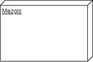
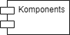
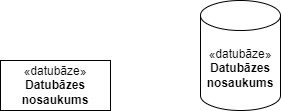
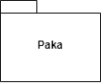
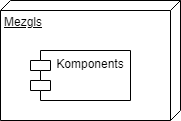
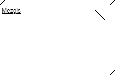

Struktūras modelis.
Attēlo fizisko arhitektūru un komponentu izvietojumu
Izvietošanas diagramma attēlo fizisko struktūru, kas ietver mezglus (datorus, serverus utt.) un komponentus, kas tajos atrodas
Tās mērķis ir parādīt, kā programmatūras elementi ir izvietoti fiziskajā vidē
Parādīt, kuri programmatūras elementi tiek izvietoti ar
kuriem aparatūras elementiem
Ilustrēt aparatūras darbības laika apstrādi
Sniegt pārskatu par aparatūras sistēmas topoloģiju
| Notācija un Apraksts | Vizuālā reprezentācija |
|---|---|
Mezgls (Node)
Aparatūras vai programmatūras objekts Mezgli ir elementi, kas pārstāv sistēmas skaitļošanas resursus, piemēram, personālos datorus, sensorus, drukas ierīces vai serverus Attēlota kā trīsdimensiju kaste. Mezgli var ietvert arī ligzdotus mezglus, lai attēlotu hierarhiskas struktūras |
 |
Artefakts (Artifact)
Pārstāv fiziskus elementus programmatūras sistēmā Artefakti pārstāv fiziskus ieviešanas vienumus, piemēram, izpildāmus failus, bibliotēkas, programmatūras komponentes, dokumentus, konfigurācijas failus, pirmkoda failus un datubāzes. Artefakti var ietvert arī papildu informāciju, piemēram, failu paplašinājumus vai versijas Attēlots ar taisnstūri, kurā ir nosaukums un vārds "artefakts", ietverts dubultās bultās |
|
Interfeiss (Interface)
Aplis, kas norāda līgumisku attiecību. Objekti, kas realizē interfeisu, ir pakļauti noteiktām saistībām Attēlots kā aplis vai elipse, uz kā ir saskarnes nosaukums. Saskarnes var ietvert arī nodrošinātās un nepieciešamās saskarnes, kas apzīmētas attiecīgi ar "+" un "-" simboliem |
|
|
Komponents (Component)
Apzīmē programmatūras elementu Parasti tiek ieviesta kā programmatūras modulis, klase vai pakotne Tas iekapsulē savu uzvedību un datus, un to var izvietot neatkarīgi Attēlots kā taisnstūris ar divām cilnēm (mazākiem taisnstūriem). Komponenta nosaukums ir ierakstīts taisnstūra iekšpusē |
 |
Asociācija (Association)
Līnija, kas norāda uz ziņojumu vai citu komunikācijas veidu starp mezgliem |
|
Atkarība (Dependency)
Punktota līnija, kas beidzas ar bultiņu, norādot, ka viens mezgls vai komponente ir atkarīga no citas |
|
Datubāze (Database)
Datubāzes atspoguļo visus datus, ko glabā izvietotā sistēma Dažkārt datubāze tiek attēlota attēlota tikai kā vēl viens mezgls, bet dažkārt tā tiek attēlota kā cilindrs |
 |
Paka (Package)
Faila formas lodziņš, kurā ir apkopoti visi ierīces mezgli, lai iekapsulētu visu izvietošanu |
 |
Mezgls kā konteiners (Node as container)
Mezgls, kurā ietverts cits mezgls, piemēram, kur mezglos ir iekļautas komponentes |
 |
Stereotips (Stereotype)
Ierīce, kas atrodas mezglā un ir attēlota mezgla augšpusē (ikona), ar nosaukumu, kas ietverts dubultās bultās |
 |